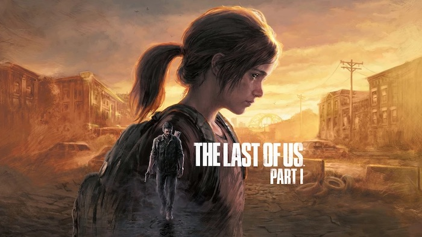

The Last of Us: part 1
The Last of Us Part I is an action-adventure survival horror video game developed by Naughty Dog and PlayStation Studios and published by Sony Interactive Entertainment. It is a remake of the 2013 game The Last of Us and its stand alone expansion Left Behind. It was released on September 2, 2022, for PlayStation 5 and was released for Microsoft Windows on March 28, 2023.
Plot:
The plot of Part I is exactly the same as the original, with a new virus turning humans into hostile infected and being set 20 years after such. It follows a hardened survivor Joel and an immune teenager Ellie crossing across a post-apocalyptic United States in order to find a group called the Fireflies, who would be able to create a cure against the disease by studying Ellie's immunity.
Gameplay:
Similar to the original game on PlayStation 3 (and remastered for the PS4), The Last of Us Part I is an action-adventure game with survival horror elements, played from the third-person perspective. The game was rebuilt from the ground up using Naughty Dog's latest engine on the PS5, leveraging the leap in technology with its powerful hardware. The game implements modernized gameplay, improved controls and performance, and expanded accessibility options closer to that of 2020's The Last of Us Part II. Visual fidelity, effects, exploration, and combat have all been enhanced as well. The game will also support PS5 hardware features including 3D audio and the haptic feedback and adaptive triggers of the DualSense controller.